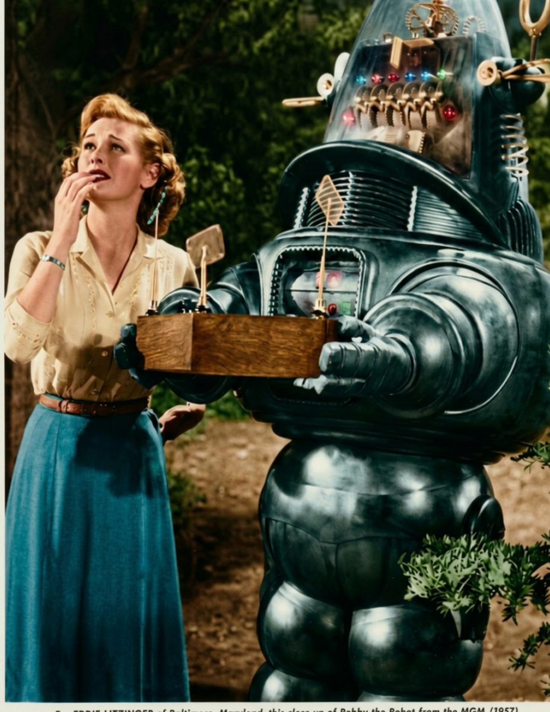
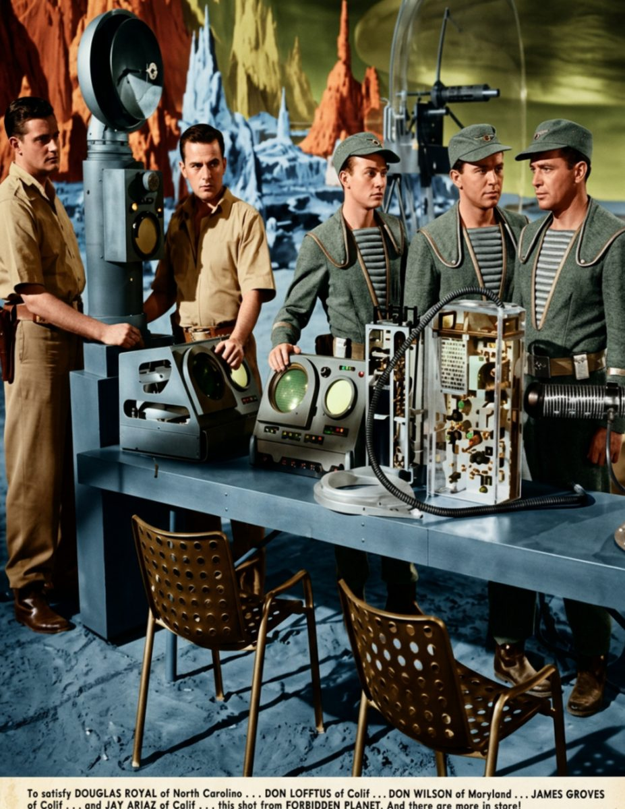
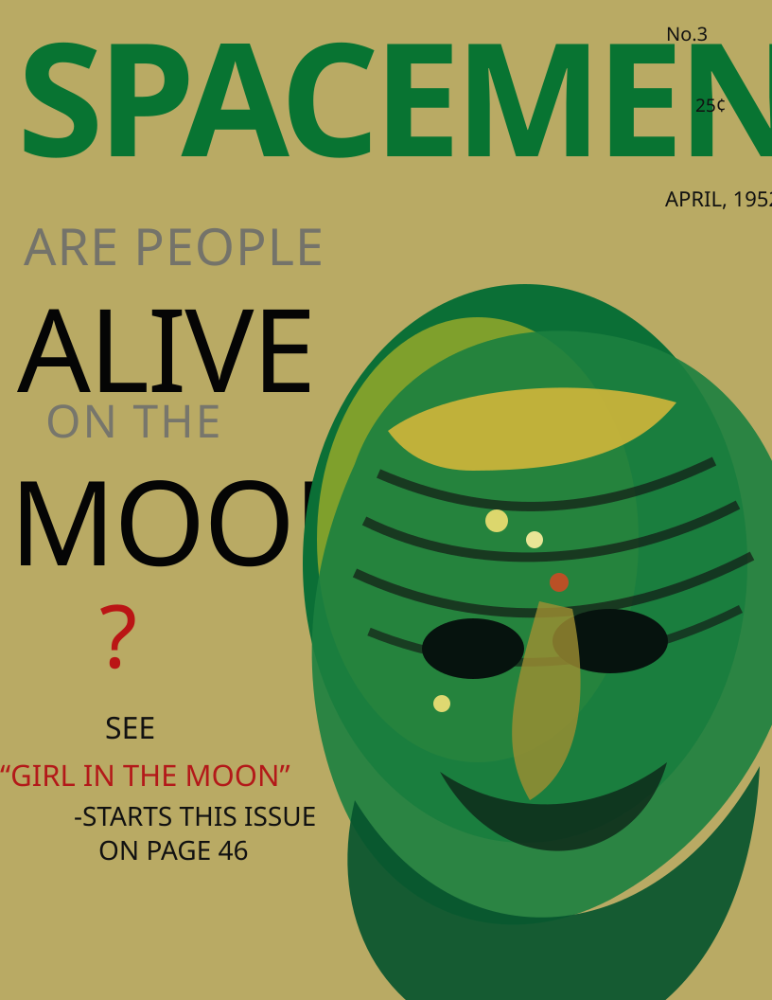

Original Article Page Images
This page shows my original page references, image notes, and wireframes for the Spacemen final project.
Image Reference Album
Scroll sideways to view the images. Click any image to see it larger.






Original Page Reference 1
Opening article page reference for the Lost Planet screen, showing the source image placement and major text areas used for the responsive layout.

Original Page Reference 2
Second article page reference for the Girl in the Moon layout, showing the tall image area and continuation structure.

Original Page Reference 3
Third article page reference for the Orbituary Department layout, showing the image-grid structure and supporting copy areas.
Wireframes and Layout Notes
The wireframes below show how I translated the magazine pages into HTML, CSS Grid, and media queries.

Home Wireframe
1280 x 1024 plan for the Lost Planet page: hero image, headline area, two copy blocks, and a full-width pull quote.

Article Wireframe
Plan for the Girl in the Moon page: tall image area, article copy, and a bold callout band.

Gallery Wireframe
Plan for the Orbituary Dept. page: image rows, short captions, and supporting copy.
Project Information
This final project uses original Spacemen magazine page references, semantic HTML, responsive CSS, and a wide editorial layout.
I started with Flexbox because it helped me quickly arrange the content. I changed the main layout to CSS Grid because it gave me better control over rows, columns, image areas, captions, pull quotes, and article sections.
I used InDesign to study page structure, spacing, image placement, and visual hierarchy. I used Affinity to optimize the photos for web use and add color treatment. I used the Internet Archive for vintage magazine imagery and article inspiration.
The working page frame is set to 97vw with a 2200px maximum width. The reference page uses a 96vw frame with a 1900px maximum width, three desktop columns, two tablet columns, and one mobile column.
The main magazine pages use a flexible spread system: hero image and story panel first, supporting copy blocks below, then a full-width pull quote and image gallery.
The images were saved for the web so the pages would load better while keeping the vintage space-magazine style.
Project by Brooke Howard for GRAPH 130.
See also the wireframe with grid measurements and tag notes.